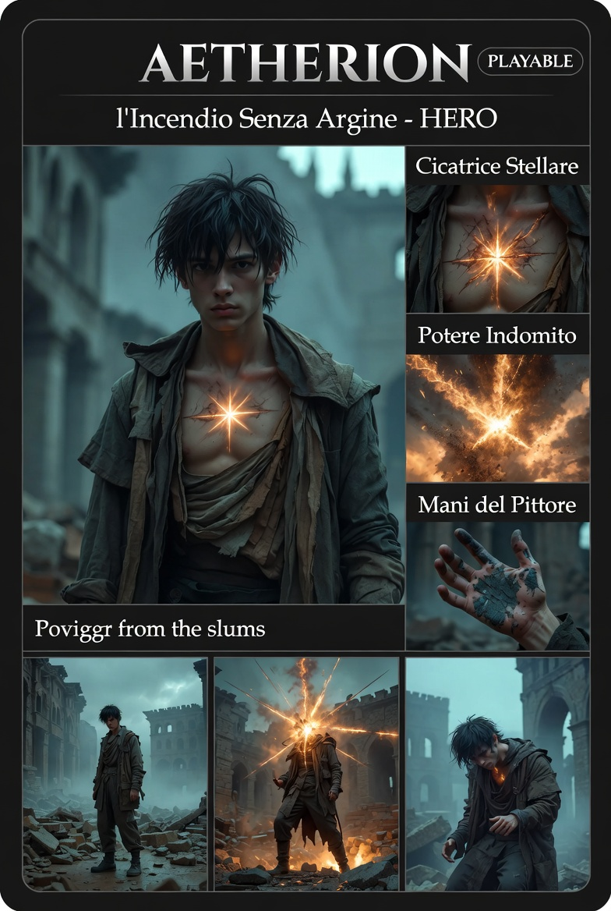

L'Incendio Senza Argine — Protagonista Storia
Il sistema lo ha chiamato Anomalia. La gente lo ha chiamato Reietto.
Lui vuole essere chiamato Ethan.
| Campo | Valore |
|---|---|
| Nome | Ethan (piano fisico) · Aetherion (piano fratturato) |
| Età | Teenager |
| Statura | Non particolarmente alto per la sua età e ruolo — Damian se lo aspettava più imponente |
| Build | Non addestrato — nessuna postura né muscolatura da combattente |
| Segno distintivo | Cicatrice a forma di stella sul petto — calda al tatto anche a riposo |
| Mani | Macchiate di pittura — la pittura è la sua unica valvola |
| Origine | Soffitta ai margini di Illyrium. Autodicatta. Figlio di nessuno e discendente di un fondatore. |
| Ruolo narrativo | Protagonista della storia — i quattro del Korvo Nero lo incontrano nel piano fratturato |
A Illyrium la magia scorre come un fiume — controllata, deviabile, tassabile. Quella di Aetherion non scorre.
La fonte del potere. Calda al tatto anche a riposo. Quando il potere erutta, parte da lì — irradiazione visibile, dolore fulmineo e chiaro.
Manifestazioni documentate: piegare e spezzare metallo · dissoluzione di freccia magica nell'aria (riflesso, non intenzionale) · I limiti non sono ancora stati mappati.
Una freccia magica diretta a un membro della famiglia reale. Un riflesso puro. La freccia di luce si dissolve tra le dita. Nessun controllo, solo il risultato. Da quel momento, l'ha seppellito e vissuto come se non l'avesse.
| Tratto | Manifestazione |
|---|---|
| Fiducia | Zero per default — sopravvivenza appresa, non cinismo |
| Resilienza | Non si lascia mettere i piedi in testa neanche quando è esausto |
| Orgoglio | Senza arroganza — sa esattamente quanto vale, sa che gli altri non lo sanno ancora |
| Relazione col vuoto | Ha sempre notato il vuoto negli occhi altrui. Lui è ciò che non volevano vedere. |
| Pittura | Unica forma di controllo e sfogo che si è concesso |
#E07828 (ember) + #141218 (vuoto) + #FFB040 (burst)| Elemento | Dettaglio |
|---|---|
| Modalità Storia | Protagonista. Il piano fratturato è il suo arco principale. |
| Modalità Roguelite | Disponibile come PG principale (default selezionato). |
| Boss finale della storia | Zeryth — una volta sconfitto viene sbloccato nella modalità roguelite |
| Compagni | I quattro del Korvo Nero (Damian, Mira, Silas, Zeryth come antagonista) — da sbloccare in roguelite |
| Antenato fondatore | Il motivo per cui nessuno lo ha esiliato — da definire in dettaglio |
| Campo | Valore |
|---|---|
| File | src/characters/Aetherion.js + src/characters/AetherionBurst.js (modulo puro) |
| Estende | BaseCharacter |
| HP max | 100 (visibile come barra principale, a differenza degli altri PG) |
| Speed | PLAYER_SPEED default |
| Risorse | Solo HP — niente seconda risorsa narrativa |
| Sprite placeholder | Rectangle 14×26 colore #E07828 |
| Sprite reale | personaggi/giocabili/aetherion/card.jpg |
| Stato | implementato — playtest pendente |
Attacco melee corto raggio. Le mani macchiate di pittura, non di sangue.
| Range | 25px (rettangolo 12×6 davanti al facing) |
| Danno | 8 |
| Cooldown | 300ms |
| Costo | Nessuno |
Cono di calore frontale che dissolve i proiettili nemici. Manifestazione lore: "dissoluzione di freccia magica".
| Range | cono 80px, half-angle ±30° |
| Effetto | Dissolve enemyProjectiles nel cono — no damage diretto |
| Durata max hold | 2000ms |
| Movimento | bloccato mentre held |
| Cooldown | 4000ms dal release |
"Spacca il lago": entra in Burst Mode. Incessante, non aspetta permesso.
| Durata | 4000ms fissi — non annullabile |
| AOE | Raggio 60px dalla cicatrice, 15 dmg/sec |
| Self-damage | 6 HP/sec (24 totali se nessun kill) |
| Kill rebate | Ogni nemico ucciso durante Burst → −1s self-damage (max 4) |
| Lockout | LMB, RMB, F disabilitati durante |
| Cooldown | 15000ms dopo fine |
Su tile METAL adiacente: distrugge il metallo. Manifestazione lore: "piegare e spezzare metallo".
| Trigger | Tile METAL in una delle 4 celle adiacenti |
| Tile effect | METAL → FLOOR per 8s, poi ripristino |
| AOE | Raggio 40px attorno al tile, 30 dmg |
| Schegge | 3 proiettili a cono ±25° facing, 15 dmg ciascuno, speed 320 |
| Cooldown | 6000ms |